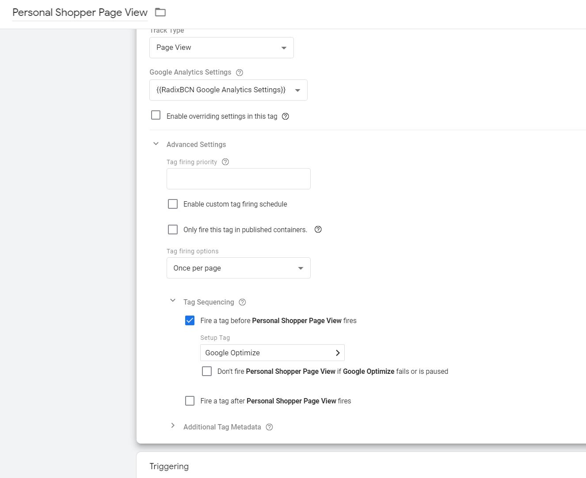
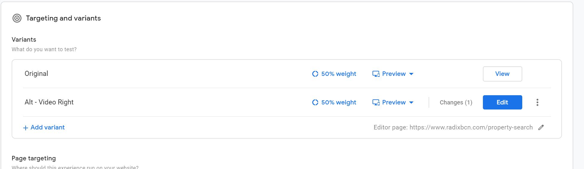
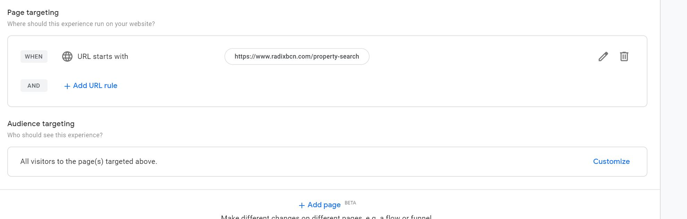
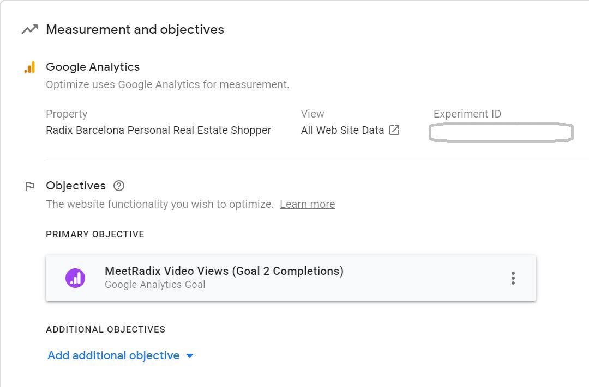
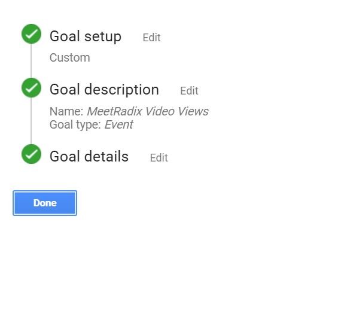
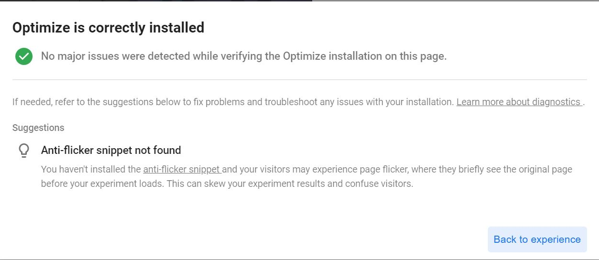
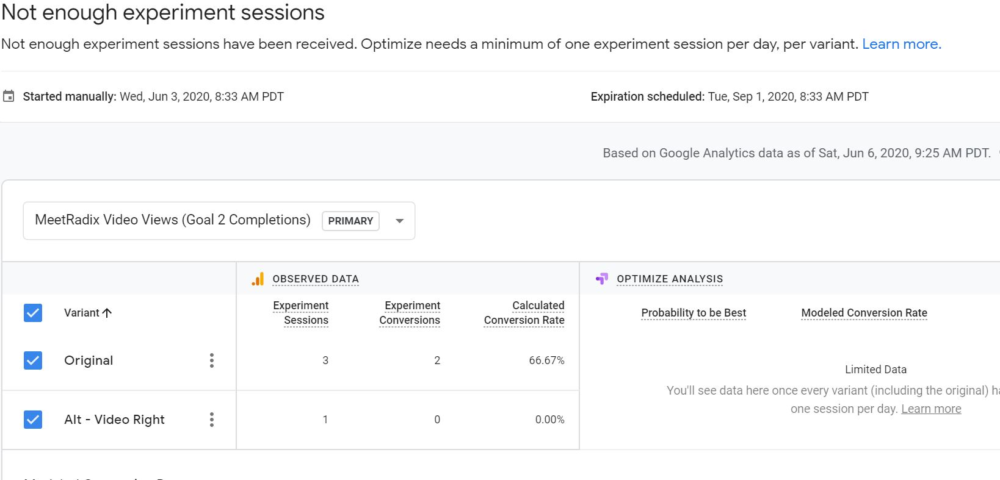

Radix Content Experiment Overview
This week I'm perfoming a content experiment to see if a change to the Radix website will encourage more users to view the "Meet Radix" video.
Planning the Experiment
Before setting up the experiment, I considered the goal in the context of a user's experience on the entire Radix website. The "Meet Radix" video that we experimented with last week lived only on the blog page. After talking informally with users who viewed the video last week, I concluded that the blog was not the correct long term location for this video. It would get too easily lost when new blog entries were added, and the information was more relevant to users looking to learn specifially about the Personal Shopper experience.
Based on this input, the video was added to a more prominent and permenant location: the top of the Personal Shopper page.
For this content experiment, I wanted to know: Are users more likely to press start on the video if it is on the left side or right side of the page?
 This "Meet Radix" YouTube video is now included on the Personal Shopper page
of the Radix website.
This "Meet Radix" YouTube video is now included on the Personal Shopper page
of the Radix website.
Setting up the Content Experiment
For this experiment, I'm creating an A/B test using Google Optimize, which is a free tool that works with Google Analytics for running visitor tests on website content. Here are the steps I followed to set up my test:
Step 1: Connect Google Optimize with the Radix website
First I created a Google Optimize account at https://optimize.google.com and noted my containter id.
Since I used Google Tag Manager to set up video tracking last week, I was then able to follow Google's instructions for setting up an Optimize tag with Tag Manager. Basically, I created a new tag associated with my new Optimize Container Id and the Google Analytics property for Radix's website.
I also created a Tag to track Personal Shopper Page Views. In the Tag Sequencing section, I instructed it to fire the Google Optmize tag before the Page View Tag.
 In Google Tag Manager, the Google Optimize Tag is set up to fire before the Personal Shopper Page View tag.Step 2: Create a variant in Google Optimize
With Google Optimize now connected to the Radix website, I began configuring my Content Experiment. To do this, I used the Google Chrome web browser and the Google Optimize extension.
For this content experiment, I need only 1 variant, which I named the "Alt - Video Right" variant which has the Meet Radix video on the right side of the page instead of the left.
In the Original version of the Personal Shopper page, the Meet Radix video
is on the left side.
 In the Alternative version of the Personal Shopper page, the Meet Radix
video is on the right side.
In the Alternative version of the Personal Shopper page, the Meet Radix
video is on the right side.
It was really easy to set up this variant using Google Optimize. I was able to do a simple drag and drop to switch the order of the text block and the video. I gave each of the 2 variants (the original and the alternative) 50% weight and my variant set up was complete.
 This screenshot shows the 2 variants set up in Google Optimize at 50% weight each.Step 3: Set up the Target in Google Optimize
The target URL for this content experiment is the Personal Shopper page in any language and all website visitors. While the video still exists on the Blog page, we are not interested in measuring views on that page for this experiment.
 This screenshot shows the target page URL starts with "www.radixbcn.com/property-search".Step 4: Set up Measurement in Google Optimize and Google Analytics
 This screenshot shows that the experiment is tied to the "MeetRadix Video Views Goal" in Google Analytics.To determine which variant is more successful, the experiment needs to be tied to a goal. In the "Measurement and Objectives" section of Google Optimize, I tied the experiment to the website's Google Analytics property.
In Google Analytics, I created a Goal to track the views of the Meet Radix video.
 This screenshot within Google Analytics shows a custom Event type goal set up to track view of the Meet Radix YouTube video.Step 5: Check Installation in Google Optimize
Within Google Optimize, I clicked the "Check Installation" button to verify that my experiment was set up correctly.
 This screenshot shows that Google Optmize is correctly installed on the Radix website, but the anti-flicker snippet was not found.I received confirmation that Optimize was correctly installed, but received a warning that "You haven't installed the anti-flicker snippet and your visitors may experience page flicker, where they briefly see the original page before your experiment loads. This can skew your experiment results and confuse visitors."
Wix does not allow me to add scripts to the head section on a web page, so I had to proceed with the experiment without it.
I clicked the option to start my experiment, and it was off and running!
Content Experiment Results
 This screenshot shows that the Google Optmize Content Experiment does not have enough data.After running the experiment for a few days, it is still lacking data to determine whether more visitors view the video when it is on the left or right side of the page. I'll attempt to encourage more page views and see if we can get a conclusive result.